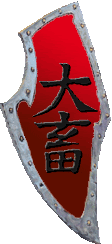

| Übersicht,
Anschläge und Stammtisch (RPG) |
|
Alamo (1  ) )
|
| Glorfindel von Gondolin (RIP) |
Es sei der Scherbe kund und zu wissen, dass Kräfte der Atha´an Miere die verderbte Stadt Alamo vom Angesicht der Welt getilgt haben.
Somit ist den Piraten und Ketzern der Yakuza und der Qu`ellar Eilistraee der Rückhalt und die Basis entzogen Freiwillige für ihre grausamen Armeen zu finden.
Nachdem wir in großer Mannstärke den Anleger der Insel Nesheia Musin erreicht hatten gab Herzog Nalon den Angriffsbefehl und zügig bewegte sich die Streitmacht des Meervolkes in Richtung auf die finstere Feste Alamo.
Hier waren bereits Armeekräfte der Reiter des goldenen Horns unter König Negus dabei die Milizen niederzuringen um uns den Weg zu bereiten. Bei Erreichen der Stadt, waren die Tore frei, so dass wir schnell durch die Strassen vorrückten. Schon bald standen wir vor dem Ziel: Dem Rathaus. Unsere Magier beschworen ihre Kreaturen, die Krieger richteten ihre Schilder und bereiteten die Katapulte vor. Überall hörte man gemurmelte Gebete an die Lichtsieben, denn der Geruch nach kochendem Öl hing bereits jetzt in der Luft.
Der Kampf war hart. Unser Respekt gehört den Bürgern von Alamo welche bis zu letzt treu zu ihrer Herrin gestanden haben, welche sie freiwillig gewählt haben.
Möge Gaia ihnen in ihren Tempeln eine weitere Chance geben.
Möge Tura jene, die Griel in ihr Reich trägt, einen gnädigen Empfang bereiten.
Und möge das brennende Alamo ein Fanal für jene sein, welche sich vom Licht abwenden und der Plünderei und Piraterie huldigen. Eure Strafe wird euch treffen, irgendwo, irgendwann, aber genau so hart und gnadenlos wie ihr euch vergangen habt.
Als Herold der Atha´an Miere
Fürst Glorfindel von Gondolin,
Vorsteher von Albiontar,
Verlobter der reizenden Fadia Butternase
Zur 17. Stunde am 84.Saatmond im Jahre 428 |
07.03.07 18:44
|
|
| Mia von Tacheless (RIP) |
Möge man stehen wie man will zu den Yakuza und ihren Spießgesellen... die Geschichte dieser Stadt stand schon geschrieben, als sie gegründet wurde. Denn erforscht man die Bibliotheken auf der Suche nach dem Begriff Alamo, wie meine Gelehrte Elriorith es in meinem Auftrag tat, so findet man folgendes:
While the facts surrounding the siege of the Alamo continue to be debated, there is no doubt about what the battle has come to symbolize. People worldwide continue to remember the Alamo as a heroic struggle against overwhelming odds — a place where men made the ultimate sacrifice for freedom.
((http://www.thealamo.org/history.html))
Elriorith hat diese uralte Abschrift folgendermaßen ins Scherbische übersetzt:
Während die Fakten der Belagerung von Alamo weiterhin diskutiert werden, besteht kein Zweifel darüber, was die Schlacht inzwischen symbolisiert. Weltweit erinnern sich Menschen an Alamo als einen Ort heroischer Bemühungen gegen eine überwältigende Übermacht, ein Ort an dem die Menschheit das ultimative Opfer für die Freiheit erbracht hat.
So ist dies nur eine Vollendung ihrer Vorherbestimmung, und so sollte es von jeher sein.
Lady Mia von Tacheless,
Verlobte des ehrenwerten Ferret,
Beste Mami der Scherbe
Zur 19. Stunde am 84.Saatmond im Jahre 428 |
07.03.07 19:09
|
|
| Xiandrie Dowan (RIP) |
wieso nur muss ich bei Alamo an brendan denken *grübelt kurz*
sei es wie es sei ... auch wenn die Bürger zu ihrer Bürgermeisterin hielten, so glaube ich nicht das es notwendig war gleich eine ganze Stadt nieder zu brennen
Xiandrie Dowan,
Jurorin des Gedichtwettbewerbs der Zeitung,
Herrin der Feuerklinge
Zur 21. Stunde am 84.Saatmond im Jahre 428 |
07.03.07 19:41
|
|
| Falke (RIP) |
ich denke mia hat alles treffend zusammen gefasst ....
dies war die erste der städte derer schicksal schon bestimmt ward ... warten wir auf die nächste .... und wem sie wohl dann gehören mag ...
Sir Falke
Zur 22. Stunde am 84.Saatmond im Jahre 428 |
07.03.07 19:43
|
|
| Brendan (RIP) |
Glückwunsch den Angreifern und mein persönliches Bedauern über das Drama der Notwenigkeit - meinem alten Waffenbruder Takehiko gegenüber.
Du weißt, wo du einmal ein zu Hause gehabt hast und wo dir jeder Zeit Tür und Tor offen stehen wird - immer noch - so du dies wünscht.
Sir Brendan,
Anführer der glorreichen Nation "Bruderschaft der Kaperfahrer",
Brendan liebt Fiona,
Kapitän des heiligen Molochs "Unsinkbar",
Teilnehmer des Gedichtwettbewerbs der Zeitung,
Ehemann der reizenden Fiona Burton
Zur 18. Stunde am 87.Saatmond im Jahre 428 |
08.03.07 11:48
|
|
Alessa Imret Eilistraee
  |
Nicht brüsten Glor, denn offensichtlich bedenkst du nicht wie gefährlich es ist Rastlose auch noch Heimatlos zu machen...
Freifrau Alessa Imret Eilistraee,
Anführerin der glorreichen Nation "Qu`ellar Eilistraee",
s´argt d´lil qu´ellar Eilistraee,
Geliebte des martialischen Takehiko
Zur 14. Stunde am 89.Saatmond im Jahre 428 |
08.03.07 21:58
|
|
| Titania Greenleafxxx (RIP) |
Ganz erstaunlich, wie manche versuchen aus einen, wenn auch zweifellosen, Sieg mehr zu machen als es wirklich war.
Zweifelhaft ist jedoch, ob es wirklich notwendig war eine Stadt niederzubrennen, die von den Vorbesitzern bereits aufgegeben wurde.
Wie dem auch sei, hoffentlich können die Bürger der ehmaligen Stadt baldmöglichst wieder friedlich Leben..
Lady Titania Greenleaf,
Vorsteherin von Magna Atlanta
Zur 22. Stunde am 89.Saatmond im Jahre 428 |
08.03.07 23:55
|
|
| Cwlvyn ab Dhwron (RIP) |
Klar war es notwenidig, auf das der Abschaum von der Scherbe getilgt wird.
Sir Amorous Meara,
Anführer der glorreichen Nation "Blutgieriger Berserkerkult",
König der Plünderer
Zur 12. Stunde am 90.Saatmond im Jahre 428 |
09.03.07 3:02
|
|
| Falke (RIP) |
"Wie dem auch sei, hoffentlich können die Bürger der ehmaligen Stadt baldmöglichst wieder friedlich Leben.. "
schonmal was von dem ende eines lebens gehört ??? ich würde fast vermuten das beim niederbrennen einer stadt nicht alle froh und frei und quietschvergnügt rumhüpfen und sich sagen "ooch ... dann machma halt ne neue stadt, is uns doch egaaaaal ... wenigstens schön warm die flammen !!"
also manchmal glaube ich wirklich einige leute rauchen entweder zuviel und sind einfach nur zu doof für diese welt ...
kurzum ... auch für dich titi ... DIE LEUTE SIND VERRECKT !!! DAHINGERAFFT !!! UM DIE ECKE GEBRACHT !!!
verstanden ?
na dann ...
bis dann ....
Sir Falke
Zur 12. Stunde am 1.Blumenmond im Jahre 428 |
09.03.07 8:51
|
|
| Frances el Ferror (RIP) |
Alamo wurde nicht niedergebrannt weil sie so einen tollen Name hatte oder weil das in irgendwelchen Geschichtsbüchern schon so vorbestimmt war.
Die Stadt wurde niedergebrannt weil sie halt doch nicht aufgegeben war. Sie hatte noch einen Bürgermeister. Ausserdem stand sie wohl auch noch am falschen Fleck. Es war also pure Notwendigkeit sie niederzubrennen und nichts anderes sagte auch Glorfindel.
Werte Alessa Imret Eilistraee das Plünderer ein gestörtes Verhältnis zum Besitz anderer und zum eigenen Besitz haben ist wohlbekannt. Ob sie Gebäude oder "Heimat" nun haben oder nicht ist dabei unwesentlich es entscheidet nur ob man gegen sie direkt oder indirekt vorgehen kann. Wenn sie z.B. keine Gebäude haben müssen halt die Gebäude der Leute die sie schützen/helfen dran glauben. So sieht die Realität auf der Scherbe aus es spielt also keine Rolle ob ein Plünderer nur rastlos oder sogar heimatlos ist solange er ein Plünderer ist wird er Reaktionen auf sein Handeln provozieren. Und diese Aktion war wohl so eine Reaktion.
Im übrigen ist ein Sieg ein Sieg wenn die Kriegsziele erreicht wurden und wenn ich halbwegs richtig informiert wurde sind sie es. Es gab sich wohl niemand der Illusion hin das jetzt ein Massenselbstmord der Yakuza+Co stattfindet. Denn dies ist die einzige Möglichkeit "Helden" hier wirklich "auszulöschen".
Gräfin Frances el Ferror,
Vorsteherin von Castello el Ferror,
Leibwichtel Wasils
Zur 17. Stunde am 1.Blumenmond im Jahre 428 |
09.03.07 9:54
|
|
| Erebos von Taldrad (RIP) |
Werter Amorous Meara ohne euch nahe zu treten oder gar zu beleidigen...
Anhand eurer Kleidung(insbesonders eurer Kappe), Wappen und denn Namen der Nation unter der ihr lebt, könnt man fast meinen bei euch wäre es auch notwendig...
Abgesehen davon finde ich das für die taten einzelner nicht gleich eine ganze Stadt büßen sollte...
Erebos von Taldrad
Zur 18. Stunde am 1.Blumenmond im Jahre 428 |
09.03.07 10:02
|
|
Tilion
  |
Schönschön, werte Frances. Der schnelle Sieg, der schnelle Stadtabriss und die relativ geringe Gegenwehr der Verteidiger wundern mich trotzdem sehr.
Also entweder hat man tatsächlich nur einen befestigten Friedhof gestürmt, oder es war nur ein taktischer Rückzug, um den Angriff praktisch ins Leere laufen zu lassen.
Na immerhin hat König Negus nun eine Insel mehr, die er mit seinen Untertanen besiedeln kann. Ist ja auch nicht zu verachten.
Baron Tilion,
Vorsteher von Avarannon
Zur 20. Stunde am 1.Blumenmond im Jahre 428 |
09.03.07 10:32
|
|
| Falke (RIP) |
Tilion,
ein bisschen hirn gefällig ?
geringe gegenwehr ? habt ihr mal gelesen wieviel burgkrieger überwunden werden mussten ? wieviel mann armee besiegt wurden ?
ich bin mir sehr sehr sicher ihr habt nichtmal armeen gesehen die ein zehntel so gross waren ...
ich würde die geringe gegenwehr daraufhin zurückführen, dass die yakuza ehrenvolle kämpfer sind und wissen wann sie verloren haben ...
aber stimmt ... es war alles nichts wert ... die stadt kostete 1 gs, die verteidigung vielleicht 5 ... schon klar ...
das einige anderen aber auch wirklich das haar in der suppe nicht gönnen ....
ach und nochwas tilion, schafft erstmal irgendetwas in eurem leben bevor ihr taten wie diese zu beurteilen waagt.
verstanden ?
der rest steht oben
Sir Falke
Zur 3. Stunde am 2.Blumenmond im Jahre 428 |
09.03.07 12:16
|
|
Tilion
|
Eure Unwissenheit in bezug auf meine Person ist ja beinahe niedlich, Falke...
Zudem hatte ich das Wörtchen ´relativ´ verwendet...
Bereits vor längerer Zeit von selbst die eigentlichen Yakuza-Städte abzureissen und gegen eine Art Baracke namens Alamo zu ersetzen spricht schon fast für sich. Man nennt das auch ´verbrannte Erde´.
Baron Tilion,
Vorsteher von Avarannon
Zur 4. Stunde am 2.Blumenmond im Jahre 428 |
09.03.07 12:30
|
|
| Cwlvyn ab Dhwron (RIP) |
Sagens wirs so,das Yakuzapack taugt halt nicht mehr.
Selbst das LAotenpack konnte nicht mehr rechtzeitig zu Hilfe eilen... ganz schön traurig.
Sir Amorous Meara,
Anführer der glorreichen Nation "Blutgieriger Berserkerkult",
König der Plünderer
Zur 4. Stunde am 2.Blumenmond im Jahre 428 |
09.03.07 12:34
|
|
| Falke (RIP) |
Tilion ... man nennt euch auch dummkopf....
mischt euch nicht in sachen ein die euch nichts angehen
und sich auf ein ncihtssagendes wort wie relativ zu beziehen zeugt irgendwie mehr von armut als vieles andere an eurer Person ...
meine unwissenheit über eure person mag zwar gross sein ... doch interessiert mich weniger an wievielen blümchen ihr geschnüffelt oder mit wievielen bäumen ihr gekuschelt habt ...
es geht hier um das thema krieg und in genaum jenem habt ihr euch als bisher relativ untauglich gezeigt und auch euren erfahrungsschatz relativ wenig ausgebaut um solche schlüsse zu ziehen ...
und die yakuza haben das selbe gemacht wie ihr ... ein paar türmchen gebaut und ein paar bürglein dahinter ... was meint ihr, wenn eure türmlein und bürglein brennen war es dann auch nicht viel was dort dahinging ?
ansichts sache mein freund ...
verstanden ?
Sir Falke
Zur 8. Stunde am 2.Blumenmond im Jahre 428 |
09.03.07 13:22
|
|
Tilion
|
Warum gleich so aggressiv...? Naja wenn der große Feldherr Falke, der sogar noch gegen Ratten stirbt, das sagt, muss es ja stimmen. *schmunzelt*
Baron Tilion,
Vorsteher von Avarannon
Zur 9. Stunde am 2.Blumenmond im Jahre 428 |
09.03.07 13:35
|
|
Planet-Mors
  |
Werter Tilion,
eure Meinung bezüglich der von uns durchgeführten Aktionen gegen die Yaks und ihre Verbündeten habt ihr nun schon wiederholt zum Ausdruck gebracht.
Es ist für mich an der Zeit zu erfragen, wie es dazu kommt, dass eine Aktion gegen Plünderer und Ketzer nicht eure Zustimmung erfährt. Natürlich abgesehen davon, dass sie von unseren Verbündeten und uns durchgeführt wurde.
*schaut in die Runde*
Wer mir Antworten zu liefern vermag, kann mir gern eine Taube schicken, denn es kann selbstverständlich sein, dass meine Sichtweise ob meiner Nationszugehörigkeit eingeschränkt ist.
*blickt wieder zu Tilion*
Auf jeden Fall werde ich euer Verhalten sehr genau unter die Lupe nehmen und nach einer schlüssigen Erklärung suchen.
Planet-Mors,
Prophet im Dienste des einzig wahren Glaubens an Pheron
Zur 15. Stunde am 2.Blumenmond im Jahre 428 |
09.03.07 14:58
|
|
| Falke (RIP) |
Hey ...das mit den ratten ist unfair ... das hat mit meinen kochkünsten zu tun und nicht mit meinen kampfkünsten ...
was kann ich dafür wenn das essen in der kombüse schneller war als ich ?
Sir Falke
Zur 16. Stunde am 2.Blumenmond im Jahre 428 |
09.03.07 15:12
|
|
Tilion
|
Werter Planet-Mors, ich habe nur ausgesprochen was viele denken, auch wenn das einige andere (wie Falke) nun für dilettantisch halten mögen.
Außerdem bezogen sich meine Aussagen nicht auf Eure Aktion sondern auf die Reaktion Eurer Gegenseite, und daraus zog ich meine Schlüsse.
Übrigens steht eine nette Zusammenfassung im Freiheitsboten, wie ich grad las.
Und Falke, ich wollte mich auch keineswegs lustig machen über Eure Kampfkünste, und über Eure Kochkünste schon gar nicht, jeder wie er kann.
Baron Tilion,
Vorsteher von Avarannon
Zur 16. Stunde am 2.Blumenmond im Jahre 428 |
09.03.07 15:22
|
|
| Mayandra la Vega (RIP) |
Bejammert nicht den Tod der Einwohner von Alamo!
Sie gaben ihr Leben für ein Ziel, an welches sie glaubten. Sie standen bis zuletzt treu hinter ihrer Bürgermeisterin.
Schmälert nicht ihr Opfer mit Floskeln und Tränen!
Sollte es eines Tages notwendig sein, so hoffe ich, dass die Bürger von Kap der sieben Winde so treu hinter mir stehen, wie die Bürger von Alamo hinter Alessa standen.
Gräfin Mayandra la Vega,
Vorsteherin von Kap der sieben Winde,
Ehefrau des ehrenwerten Nalon din Adun
Zur 22. Stunde am 2.Blumenmond im Jahre 428 |
09.03.07 16:45
|
|
Planet-Mors
|
*schaut zu Tiliion*
Also habt ihr eigentlich keine eigene Meinung sondern plappert nur nach?
*schaut zu seinen Papagei*
*greift in die Tasche*
*bietet Tilion einen Keks an*
Sowas muss man natürlich wissen. Nicht auszudenken, welche Missverständnisse da entstehen könnten.
Planet-Mors,
Prophet im Dienste des einzig wahren Glaubens an Pheron
Zur 7. Stunde am 3.Blumenmond im Jahre 428 |
09.03.07 18:40
|
|
Übersicht,
Anschläge und Stammtisch (RPG)
|